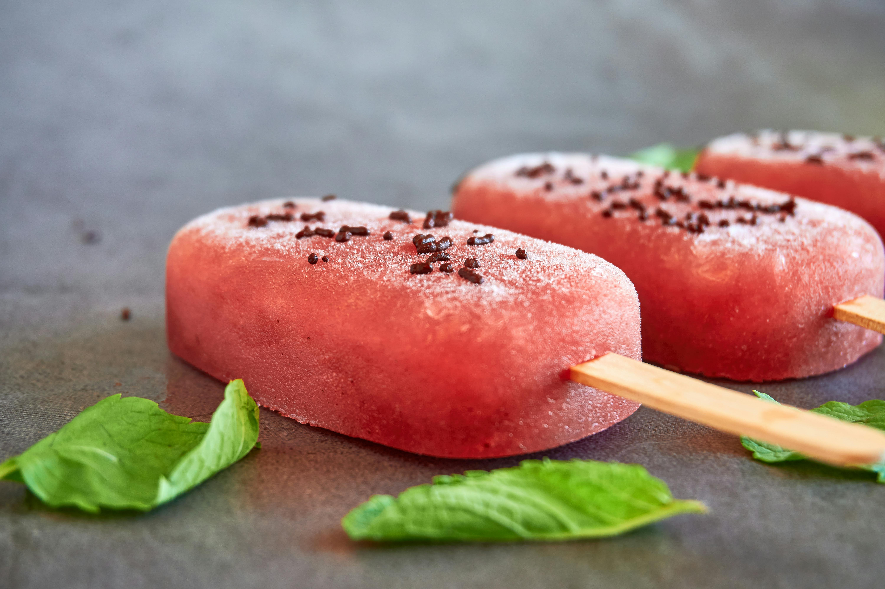

Tropsicles

The term seems to be used as a casual name for tropical-flavored popsicles or homemade frozen treats. While not a specific brand, it's associated with summer refreshment and combines tropical fruit flavors with yogurt for a healthier alternative to traditional ice pops. These treats are popular for their simplicity and nutritious ingredients.
Ingredients(1x)
- 1 ½ cups low-fat vanilla yogurt
- 1 cup sliced mango
- 1 (8 ounce) can pineapple chunks, undrained
- 1 small banana
- 1 orange, juiced
Directions
- Blend yogurt, mango, pineapple chunks with juice, banana, and orange juice in a blender until smooth. Pour into ice pop molds; freeze until set, 4 to 6 hours.
Cook's Note:
- We are in love with the Tovolo(R) molds. They are easy to use, stay upright in the freezer, and easy to clean.
Return To Home Page